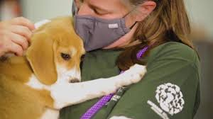

Rescates
¿Están bien los perros rescatados de entre la lava del volcán de La Palma? Es la pregunta que desde este jueves se hacía todo el mundo tras descubrirse el misterioso rescate de los perros atrapados por la lava del volcán de La Palma. Una pregunta que ya tiene respuesta gracias a un vídeo enviado a la redacción de Jara y Sedal en el que se ve a los 6 perros rescatados en buenas condiciones, cuidados y alimentados. Cientos de ciudadanos voluntarios se han volcado a las calles de la Ciudad de México para recolectar víveres y herramientas para ayudar a los brigadistas a realizar las tareas de rescate.
¿Qué hacer si te encuentras un perro callejero?
Uno de los puntos clave para saber cómo ayudar a los perros callejeros es conocer las acciones que puedes tomar al encontrarte con un animal abandonado, perdido o lastimado. Lógicamente, el primer paso es sacar este perro (u otro animal) del ambiente y de las circunstancias nocivas en las que está inmerso. Y es necesario actuar con mucho cuidado en este punto, porque recoger a un animal callejero implica no solo saber cómo acercarse, manipularlo y transportarlo correctamente, sino también asumir una serie de responsabilidades referentes a su bienestar. Por ello, no todas las personas contarán con las condiciones idóneas para recoger a un perro callejero por sus propios medios, ya sea por la falta de recursos o infraestructura para llevar a cabo el rescate y transporte del animal, o por la imposibilidad de hacer que el perro “se deje rescatar”, es decir, permita que nos acerquemos lo suficiente y podamos manipularlo de manera segura para llevarlo con nosotros. Si eres consciente de que tienes los recursos necesarios para realizar el rescate, ¡bienvenida sea esta noticia! Pero recuerda que este perro, muy probablemente, estará asustado, quizás débil o incluso lastimado, por lo que es perfectamente natural que pueda mostrar desconfianza o incluso adoptar una postura defensiva a tu intento de acercamiento. Por ello, lo primero que te convendrá hacer antes de acercarte es analizar la postura y el comportamiento del can que pretendes rescatar. Conociendo algunos parámetros básicos del lenguaje corporal canino, podrás percibir fácilmente las señales de miedo en los perros y las características típicas de una actitud defensiva, asociada a la agresividad por miedo.

¿Cómo saber si un perro tiene miedo?
Para ayudarte, resumimos a continuación los signos más evidentes que nos muestran que un perro tiene miedo, que puede reaccionar negativamente por sentirse amenazado o para alejar el individuo o estímulo que le genera molestias: Está asustado o tiene mucho miedo: esconde la cola entre las piernas, tiene las orejas echadas hacia atrás, se relame y mantiene una postura encorvada. Muestra una actitud defensiva: tiene el pelo erizado y las extremidades rígidas, enseña los dientes, gruñe, emite “ladridos de alerta” rápidos y sin pausas. Señales de agresividad ofensiva: pelo erizado, hocico arrugado, cola hacia arriba, dientes y extremidades muy rígidas y tiesas. En este caso, los ladridos suelen ser más cortos y altos, expresando claramente que cierta situación provoca enfado, dolor o molestias al perro. En caso de que el perro adopte una actitud ofensiva, más allá de mostrar algunas señales de miedo, deberías reconsiderar la idea de acercarte y contactarte con profesionales capacitados para realizar el rescate (más adelante te explicamos mejor cómo hacerlo).